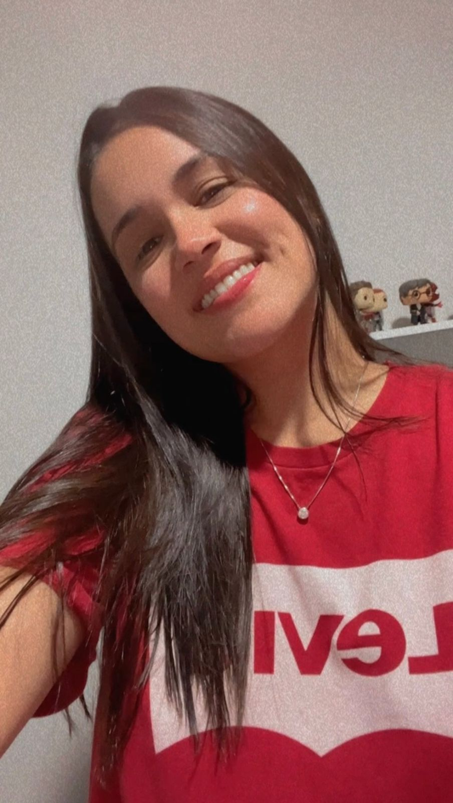

Integrantes do Time
Gabriel Cangiani
RA: 202304302723

Bruna Fernanda da Silva
RA: 20220800217

Juliana Silva Cassin
RA: 202209016158
Guilherme Acacio Pinto Neto
RA: 202302378935
Daniela Miranda Rodrigues Leite
RA: 202302382029

Tema do Projeto
QUIZCINE - Promover ou proporcionar ao usuário alternativas de escolha de filmes e séries de acordo com o seu humor, de uma forma interativa e divertida.